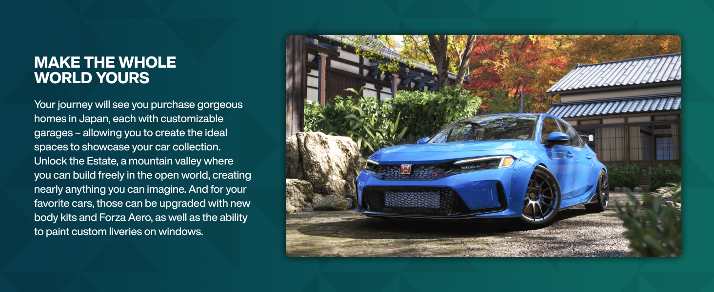

Car Builds & Tuning
Optimize your vehicles with the best performance builds for every race type. From drag racing to drift challenges.
Build Categories
A-Class Road Racing
Balanced builds for circuit racing on pavement. Good handling with decent top speed. Perfect for online multiplayer.
Price Range: 300,000 - 500,000 CR
PI Target: A800
S-Class Speed Demon
Maximum top speed builds for straight-line events and speed zones. Sacrifices handling for pure velocity.
Price Range: 800,000 - 1,500,000 CR
PI Target: S1 900+
Dirt Rally Builds
Optimized for off-road racing with enhanced suspension and all-terrain capability.
Price Range: 200,000 - 400,000 CR
PI Target: A800
Drift Spec
High power rear-wheel drive builds designed for style and drift score multiplication.
Price Range: 400,000 - 700,000 CR
PI Target: S1 850
A-Class Road Racing Build
Recommended Car: BMW M3 E46
The E46 M3 offers the best balance of power, handling, and affordability for A-Class road racing.
Essential Modifications:
- Engine: Sport Intake, Street Exhaust, Race Cam
- Transmission: Sport Gearbox with close ratios
- Suspension: Sport Lowering Springs, Adjustable Dampers
- Brakes: Sport Brake Pads, Carbon Ceramic Rotors
- Tires: Sport Semi-Slicks (295mm rear)
- Aero: Rear Wing for increased downforce
Tuning Settings:
- Camber: Front -1.5°, Rear -1.0°
- Toe: Front 0°, Rear -0.2°
- Caster: 5.0°
- Spring Rate: Front 450, Rear 350
- Damping: Rebound 12, Compression 8
- Alignment: Set via live tuning per track
S-Class Speed Build
Recommended Car: Koenigsegg Jesko
The Jesko Absolut is the fastest top-speed car in the game, capable of exceeding 300 MPH with the right build.
Essential Modifications:
- Engine: Full Engine Swap (V8), Race Intake, Race Exhaust
- Transmission: Drag Transmission with overdrive
- Suspension: Drag Springs, Stiff Dampers
- Brakes: Race Brakes (cooling enabled)
- Tires: Drag Tires (front), Slicks (rear)
- Aero: Remove all downforce, aerodynamic delete
Tuning Settings:
- Final Drive: 3.73 (short for acceleration) or 2.90 (for top speed)
- Shift Pattern: Manual with clutch, optimal shift at 8500 RPM
- Tire Pressure: High (35 PSI front, 30 PSI rear)
- ABS: Off for maximum control
Dirt Rally Build
Recommended Car: Subaru WRX STI
The STI is the ultimate dirt racing machine with symmetrical AWD and rally heritage.
Essential Modifications:
- Engine: Intake, Exhaust, Intercooler upgrade
- Transmission: Rally Gearbox with manual
- Suspension: Rally Suspension with raised height
- Drivetrain: Stock AWD (no changes needed)
- Tires: Rally Tires (All-Terrain compound)
- Aero: Rally bumper, Roof scoop
Tuning Settings:
- Center Differential: 50/50 torque split
- Front Differential: 100% lock
- Rear Differential: 100% lock
- Spring Rate: Soft (200-250 range) for terrain absorption
- Ride Height: Max raised position
Drift Build
Recommended Car: Nissan S15 Silvia
The S15 is the quintessential drift car with perfect weight balance and rear-wheel drive dynamics.
Essential Modifications:
- Engine: Full turbo, intake, exhaust, intercooler
- Transmission: Sport gearbox, single-speed for drift
- Suspension: Drift Springs, aggressive negative camber
- Drivetrain: RWD conversion, no LSD (for clutch kick)
- Tires: Drift tires front, Slicks rear
- Weight: Strip interior, carbon hood, minimal weight
Tuning Settings:
- Camber: Front -3.5°, Rear -2.0° (aggressive for tire contact)
- Toe: Front -0.5°, Rear 0°
- Spring Rate: Very stiff (600+ front, 500+ rear)
- Rear Stiffness: Lower than front for oversteer
- Handbrake: Enabled, aggressive effect
- TCS: Off for full control
General Tuning Tips
Start with Default Settings
Always test base performance before tuning. Identify whether you need more grip, more power, or better balance.
Track-Specific Tuning
Adjust tire pressure 2-3 PSI lower for technical tracks. Increase for high-speed circuits. Fine-tune suspension per track length and corner types.
Temperature Matters
Cold tracks (snow, night) require higher tire pressure. Hot tracks (desert, noon sun) need lower pressure for more contact patch.
Data Analysis
Use the telemetry screen to identify which tires are overheating, which corners you brake too early, and where you lose the most time.
⚡ Lag Ruining Your Races?
High ping affecting your competitive performance? Get the edge with ExitLag - optimized for racing games.
Try ExitLag Free